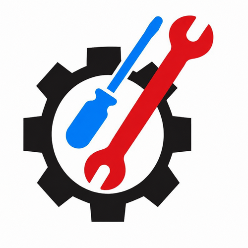

Ashtar Trade Test & Technical Training Centre (Ashtar TTC) is a technical training institute in Multan, Pakistan, founded in 2021. The centre trains skilled workers for local industry and for overseas jobs in the Gulf, with hands-on practical training, trade-test preparation, and Job Placement Assistance.
6G Welding (SMAW / TIG / MIG) — Our flagship welding programme covers stick, TIG and MIG welding in all positions, including the demanding 6G pipe position that Gulf employers test for. Students weld real joints under instructor supervision until their work passes visual and bend tests.
Electrician — House wiring, industrial wiring, motor control, and electrical safety, taught on live boards and panels so students learn by doing, not by memorising diagrams.
Pipe Fitter — Pipe layout, cutting, threading, fitting and erection for industrial and building services, with training in reading isometric drawings.
Pipe Fabricator — Fabrication of pipe spools, supports and structures from drawings, including cutting, fit-up and tack welding.
Mechanical Fitter — Fitting, alignment, bearings, pumps and rotating equipment maintenance for plant and factory work. Learn more: Mechanical Fitter Course
HSE (Health, Safety and Environment) — Workplace safety, hazard identification, permit-to-work systems and safe working practices required on Gulf project sites.
Civil Surveyor — Land surveying with total station and level instruments, setting out, and quantity measurement for construction work.
Most Gulf employers hire through a trade test — a practical test of the exact skill they need. We prepare students the way the test is actually run: timed practical tasks on the same equipment, mock tests under test conditions, and correction of every fault before the real test. Our trainers have prepared candidates for employers and test centres across Saudi Arabia, the UAE, Qatar and Oman.
Our training is built around what Gulf employers ask for: the 6G welding position, pipe fitting to drawing, electrical installation to standard, and HSE awareness. We also guide students on documents, medical requirements and the recruitment process, and we offer Job Placement Assistance to help trained students reach overseas employers.
Visit the centre in Multan, call us, or message us on WhatsApp. Bring your CNIC and educational documents. Courses run in batches; seats are limited because training is practical and hands-on, with small groups per instructor.
Where is the centre located?
Usman Ghani Road, near Brite Hall School, Multan, Pakistan.
Do you help with jobs after training?
Yes — we offer Job Placement Assistance for trained students, including guidance for overseas Gulf jobs.
Which course is best for Gulf jobs?
6G Welding, Pipe Fitter, Pipe Fabricator and Electrician are the most in-demand trades in the Gulf. Your choice should match your background and the trade test you can pass.
Do I need experience before joining?
No. Our courses start from the basics and build up to test standard through practical work.
How do I contact the centre?
Phone 0300-7365255 or 0300-7322762, email ashtartradetestcenter@gmail.com, WhatsApp https://wa.me/923007365255, website https://www.ashtartradetest.com/.
Ashtar Trade Test & Technical Training Centre
Usman Ghani Road, near Brite Hall School, Multan, Pakistan
Phone: 0300-7365255, 0300-7322762
Email: ashtartradetestcenter@gmail.com
WhatsApp: https://wa.me/923007365255
Website: https://www.ashtartradetest.com/
Founder & CEO: Shahid Abbas